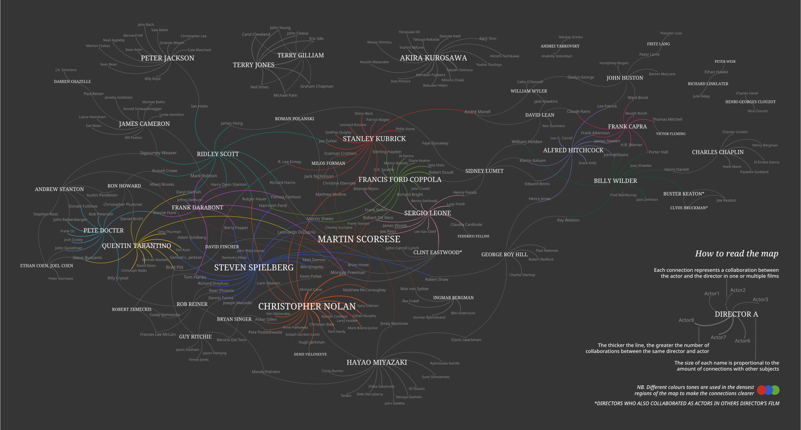

Graphic visualization of the directors and actors who collaborated the most with each other within IMDb's Top 250 Movies list.
The graph represents collaborations between actors and directors in films included in the IMDb's Top 250 Movies list, displaying only interconnected subjects with at least 2 appearances on the list.